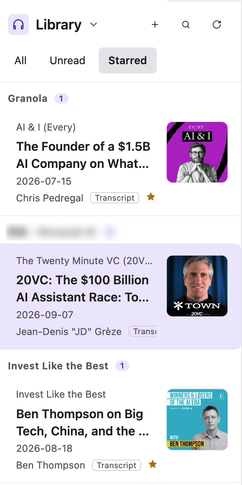
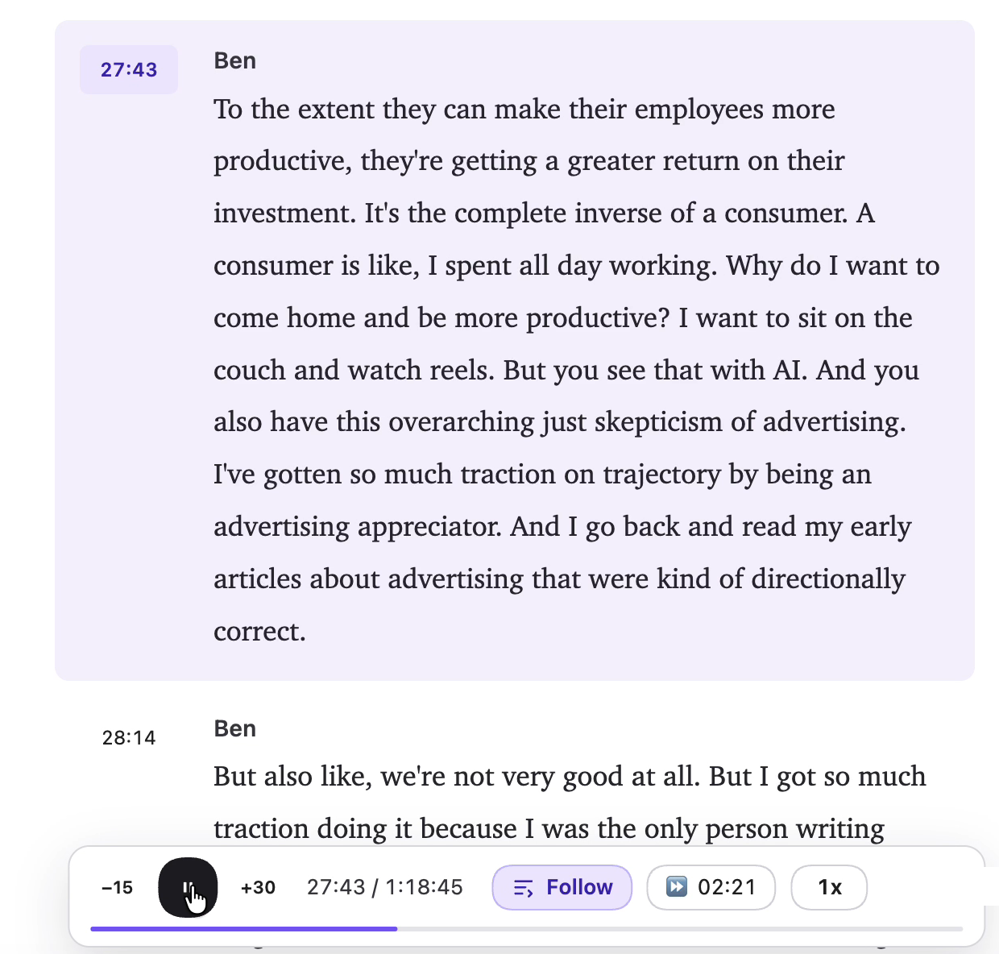
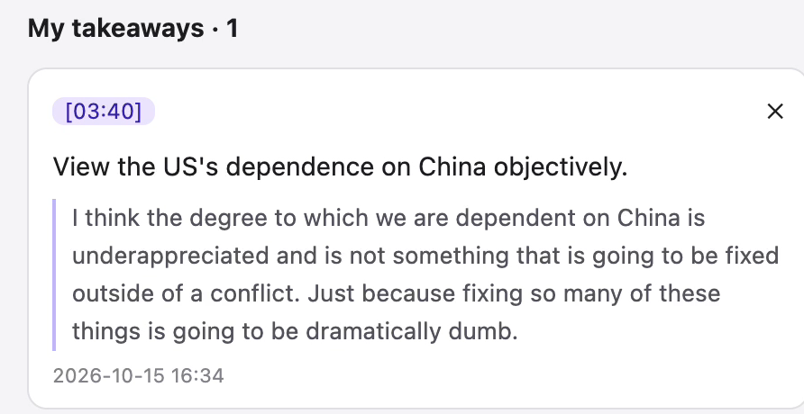
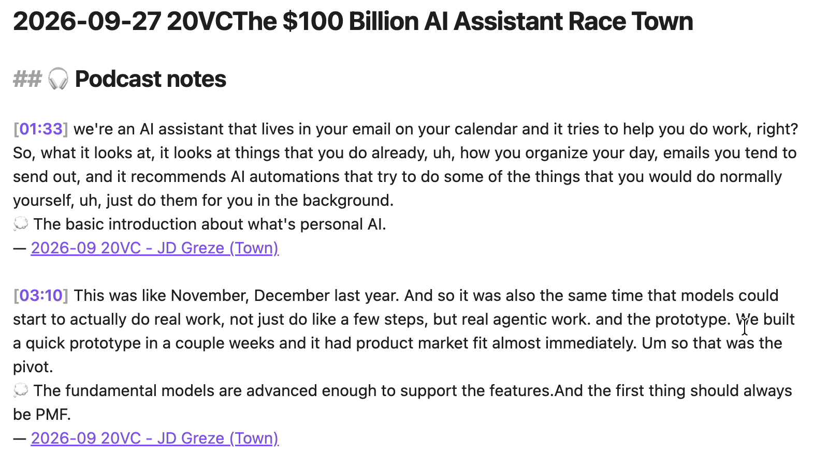
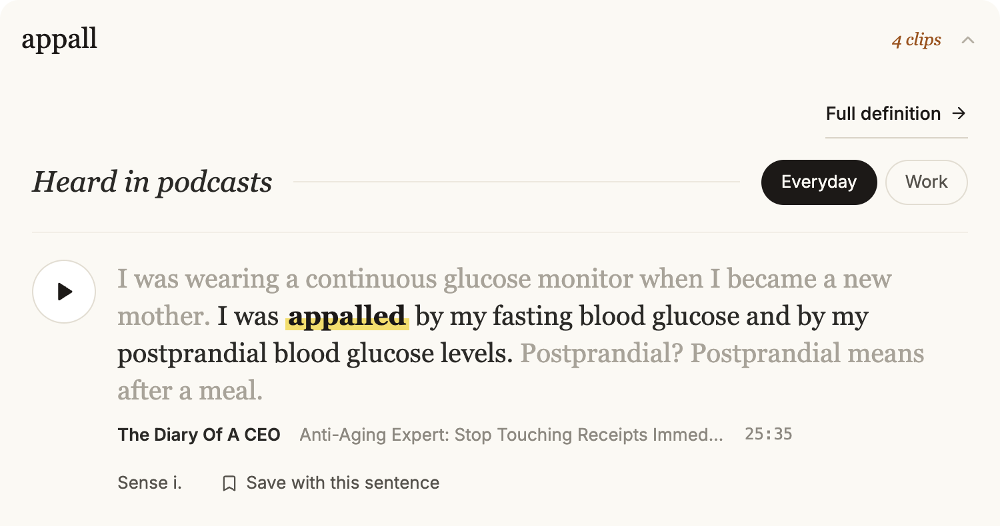

Exact quotes from long podcasts, searchable in my Obsidian vault.
Pull an episode
/podcast-dig with a company name finds its founder and investor interviews, ranks them, and files each episode in my vault with a full, timestamped transcript.

1
1Filed by company: Granola
The transcript follows playback
Press play and the reader scrolls with the speaker, so the line being said is always on screen.

2
2Follow keeps the playing line in view
Keep a line, with its timestamp
Highlight a line and it goes to My takeaways with its timestamp, the speaker's exact words and my own note.

3
3The exact words, kept at 03:40
Notes in plain Markdown
Kept lines land in an ordinary Obsidian note: timestamp, exact quote, my note and a link back to the episode.

4
4Timestamp, quote, my note, source link
One cache shared with LexiAI
podcast-dig checks corpus.db, the local Whisper cache it shares with LexiAI, before transcribing, so each episode is transcribed once on my Mac. LexiAI's podcast clips come from the same cache.

5
5Same cache, as a word clip in LexiAI
1 / 5
It also supplies the raw material for Startup Research: founder interviews, quoted exactly.